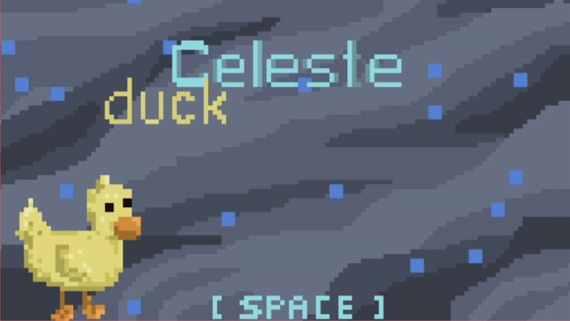
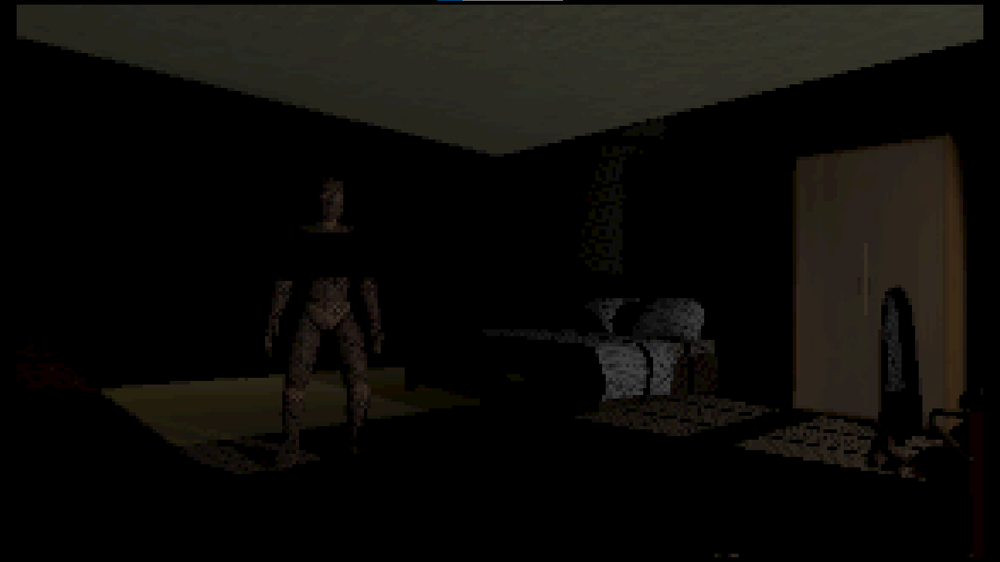
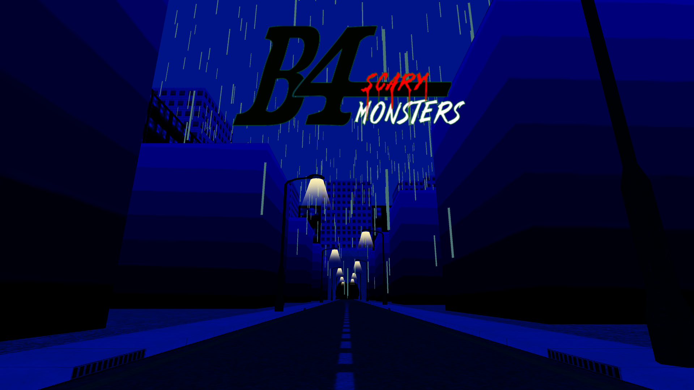
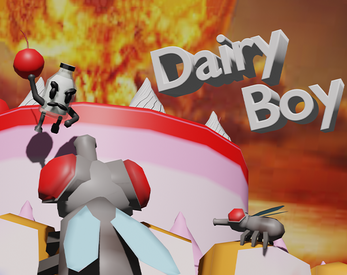

Projects

Duck Celeste Game
Developed in Eclipse: 2024
Description
This was a project developed in my CSSE-220 class at Rose-Hulman and it was a group project between 2 other partners. It took place over 3 weeks and we had the choice to make one of two different types of game in Eclipse. We chose the harder of the two which was to make a clone of the game Celeste. The game was programmed using Java primarily focusing on parent classes and inheritance to get the game to run.
This was a project developed in my CSSE-220 class at Rose-Hulman and it was a group project between 2 other partners. It took place over 3 weeks and we had the choice to make one of two different types of game in Eclipse. We chose the harder of the two which was to make a clone of the game Celeste. The game was programmed using Java primarily focusing on parent classes and inheritance to get the game to run.

Scary Monsters 2
Developed in Unity: 2023
Description
This was a personal project I made alone in Unity. It is a short ten minute game I made in a month for my brother as a joke. The game involves walking around a recreation of a real life house. It is programmed in C# and this was the first decently large scale project I managed to finish in unity.
This was a personal project I made alone in Unity. It is a short ten minute game I made in a month for my brother as a joke. The game involves walking around a recreation of a real life house. It is programmed in C# and this was the first decently large scale project I managed to finish in unity.

Scary Monsters 4
Developed in Unity: 2024
Description
This was another personal project I made alone in Unity. This is similar to the last Scary Monsters game I made but this one is an hour long and I spent 4 months working on it. It mostly develops on the last game with more time being spent on the in-game AI and in-game systems. I also modeled all of the assets in the game in blender.
This was another personal project I made alone in Unity. This is similar to the last Scary Monsters game I made but this one is an hour long and I spent 4 months working on it. It mostly develops on the last game with more time being spent on the in-game AI and in-game systems. I also modeled all of the assets in the game in blender.

Dairy Boy
Developed in Unity: 2024
Description
This was a collaborative project between me and my brother for a game jam. We made it in Unity and we completed the project in the span of 3 days. I made most of the visual assets and a decent portion of the C# code while my brother made the rest. The game itself is a short 5 to 10 minute high-score survival game where you move around and throw bombs at flies.
This was a collaborative project between me and my brother for a game jam. We made it in Unity and we completed the project in the span of 3 days. I made most of the visual assets and a decent portion of the C# code while my brother made the rest. The game itself is a short 5 to 10 minute high-score survival game where you move around and throw bombs at flies.